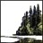
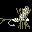

| Website | Description | Author |
|---|---|---|
| cacreeks.com | Archive of California river runs. | Bill Tuthill |
| oregonkayaking.net | Archive of Oregon and California river runs. | Jason Rackley |
| totalescape.com | A travel guide to off the beaten path places in California. | Dana Mite |
| waterfallswest.com | Archive of waterfalls in the western US. Paid subscription needed. | Leon Turnbull |
| hotwaterslaughter.com | Archive of hot springs throughout the west. | Two hot spring enthusiasts from Seattle |
| brennen.caltech.edu/dankat/dankat.htm | A Caltech mechanical engineering professor’s website documenting his travels and professional interests. | Christopher Earls Brennen |
|  redwoodhikes.com | Archive of hikes in California with old growth redwoods. | David Baselt |
| bigsurtrailmap.net | Interactive Big Sur trail map that highlights important locations and trail conditions based on recent reports. | Jack Glendening |
| snwburd.com/bob/ | Bob Burd’s archive of California mountain peak hikes. | Bob Burd |
| tedmuller.us/Outdoor.htm | The outdoor section of Ted Muller’s personal website. | Ted Muller |
| nicholasmeier.wordpress.com | The outdoor section of Nicholas Meier’s personal website. Trip reports and lots of skinny dipping. | Nicholas Meier |
|  flyfishingthesierra.com | Maps and descriptions of fishing locations in the Sierra Nevada. | Steve Schalla |
| bayesianinvestor.com/waterfalls.html | The waterfall archive section of Peter McCluskey’s personal website. | Peter McCluskey |
| northforktrails.com/RussellTowle/Towle.html | Russell’s Towle’s documentation of the North Fork of the American River Canyon and his personal interests. | Russell Towle |
| soakersforum.com | Hot spring forum. | Hot spring enthusiasts |
| birdandhike.com | Birding and hiking information on the southwest from the point of view of an ecologist. | Jim Boone |
| paddleon.net | Paddling trip reports and information on rivers in the southwest. | Gene Couch |